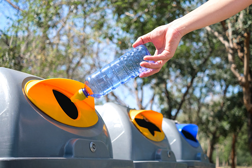

Prefira refil
Sabonete, detergente e amaciante em refil usam bem menos plástico do que comprar a embalagem nova toda vez.
O plástico está em quase tudo ao nosso redor. Ele é útil, mas quando vai parar no lugar errado demora centenas de anos para sumir da natureza.

Boa parte do plástico que usamos é descartada depois de um único uso. Quando não é reciclado, ele entope bueiros, polui rios e mares e acaba prejudicando os animais. A boa notícia: pequenas mudanças já ajudam muito.
Sabonete, detergente e amaciante em refil usam bem menos plástico do que comprar a embalagem nova toda vez.
Ter sua própria garrafinha e caneca evita dezenas de copos descartáveis por mês.
Deixe uma sacola retornável sempre na bolsa ou no carro e dispense a sacolinha do mercado.
Pediu delivery e vai comer em casa? Avise que não precisa de talher e canudo de plástico.
Uma enxaguada rápida na embalagem ajuda muito quem trabalha na reciclagem.
Potes e garrafas podem virar vaso de planta, organizador ou porta-lápis antes de ir para o lixo.